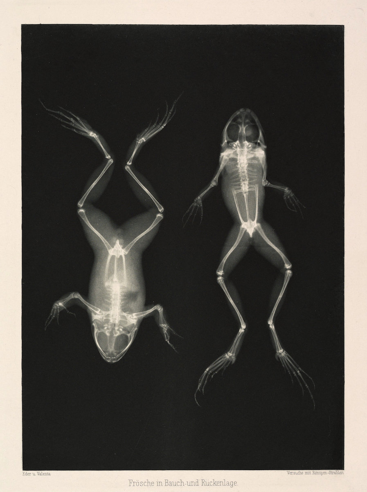
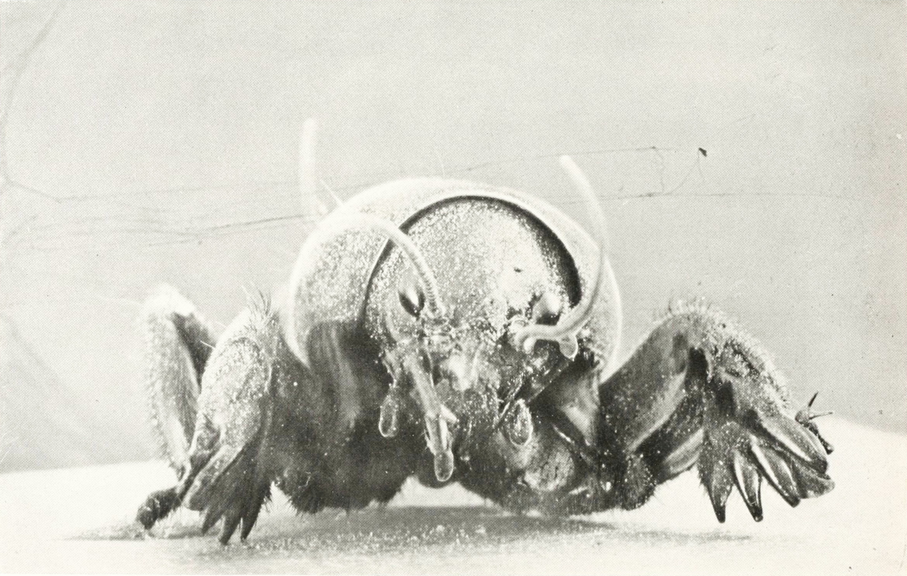
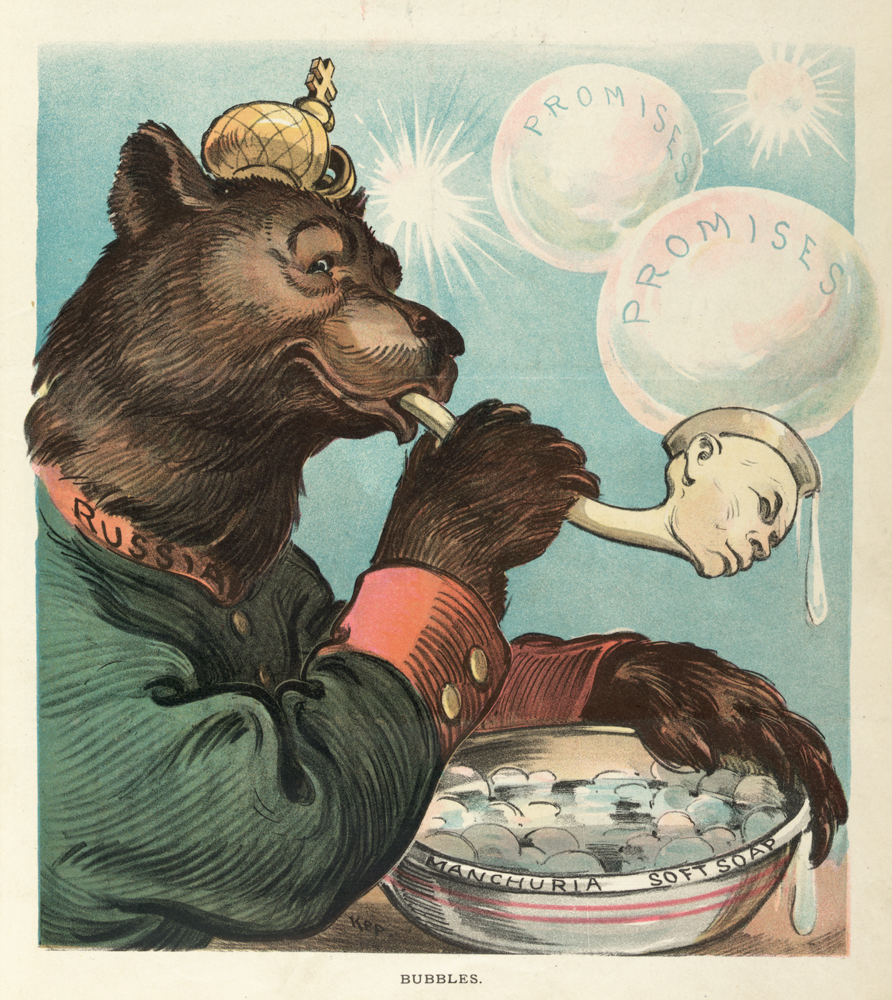

Simón De Zubiría Restrepo
Diseñador y desarrollador web
Me interesa profundamente la programación como una herramienta para crear experiencias visuales significativas, impactantes y técnicamente refinadas. Considero el código no solo como un lenguaje funcional, sino como un medio creativo con el potencial de generar conexiones auténticas a través del arte, la interacción y el diseño. Poseo una sensibilidad estética desarrollada y un fuerte impulso hacia la creación en todas sus formas. Mis intereses abarcan el desarrollo visual con código, el diseño gráfico, la animación, la ilustración, el 3D y las experiencias interactivas.
Descargar CVProyectos
Oscilaciones
Una exploración metamodernista del amor
Portfolio Path
Diseño web y branding para una marca de asesoría de arte
The Doubtful Guest
Proyecto Web narrativo
LabJusticia
Desarrollo de la página del laboratorio para la justica Uniandes

Galería visual y audiovisual
Colección de imágenes y videos que muestran otras facetas mías